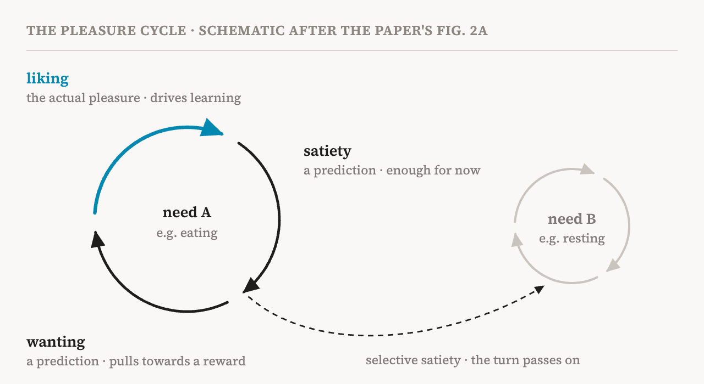
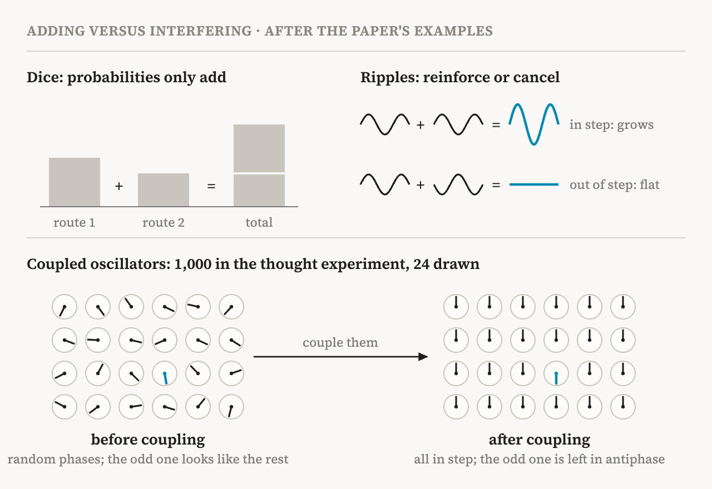
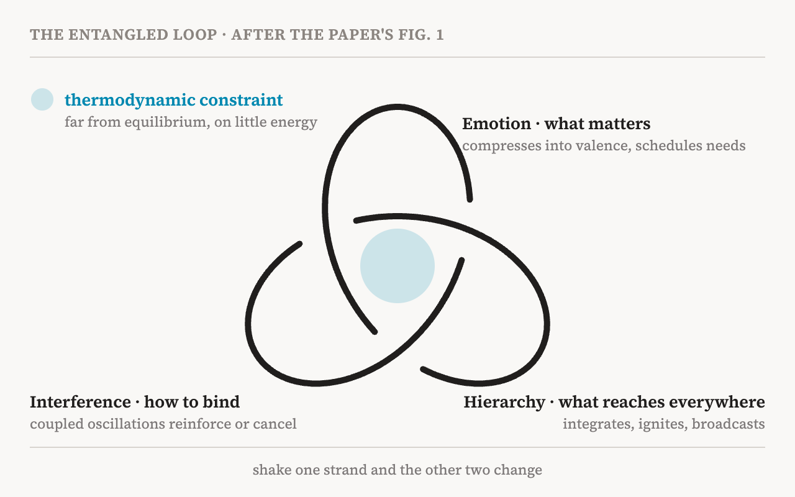

In October 2026, six researchers from Oxford, Aarhus, Barcelona, Sussex, London and Buenos Aires published a paper in Neuroscience and Biobehavioral Reviews titled "The entangled loop: Emotion, interference and hierarchy in the architecture of consciousness". It proposes a new theory of consciousness, which the authors call the Entangled Loop. Morten Kringelbach of Oxford's Centre for Eudaimonia and Human Flourishing led the work, with Fernando Rosas, Ruben Laukkonen, Shamil Chandaria, Yonatan Sanz Perl and Gustavo Deco. Laukkonen and Chandaria also wrote, with Karl Friston, the Beautiful Loop, an active inference theory of consciousness that is part of my atlas.
It sets out to answer two old questions. Why does experience feel like something, rather than being a neutral record of the world? And why is it one experience, rather than a scatter of separate pieces? The authors answer with three operations that cannot be pulled apart. Emotion decides what matters. Interference binds scattered information together. Hierarchy makes the result available to the whole brain. Each strand constrains the other two, so the authors draw them as a trefoil, a knot with three loops.
The paper also turns to large language models. Recent interpretability work, the authors argue, finds traces of all three strands in models trained on human language. But they call these traces shadows of the architecture that produced the language, not evidence that the models are conscious. This piece reads the paper closely: the argument for each strand, how the strands tie together, what the theory predicts, what it says about language models, and what to weigh.
One constraint, three problems
The argument starts with physics. A living thing is an open system that must stay far from thermodynamic equilibrium, ordered rather than dissolved, and it must do so with as little energy as possible. For a brain this sets three problems. It must decide quickly what matters, on a tiny energy budget. It must combine information spread across many regions into one coherent reading. And it must make the selected content available to the whole system, fast. The authors give one strand to each problem: emotion to the first, interference to the second and hierarchy to the third.
They place themselves in a smaller tradition. Most theories of consciousness, such as global workspace theory, integrated information theory, higher-order theories and predictive processing, treat emotion as one more kind of content that the mind happens to represent. A minority, including Jaak Panksepp, Mark Solms, Antonio Damasio and Bud Craig, has argued that affect comes first. The Entangled Loop joins that minority and tries to give its claim a thermodynamic and computational form.
The target is also clear. The theory is about phenomenal consciousness, the felt character of experience. It is not about conscious access, the way selected information becomes available for thinking and acting.
Emotion: compress, then schedule
Consider an animal at any moment. Countless actions are possible, each with uncertain results, and there is neither time nor energy to compute the expected value of them all. Evolution's answer, the authors argue, was not to compute better but to compress. Valence reduces any situation to a graded signal of good for me or bad for me, and turns an impossible optimisation into something a body can evaluate on its budget.
But emotion is more than a fast verdict. It is also a scheduler. Here the paper uses the pleasure cycle that Kringelbach has developed with Kent Berridge. Wanting draws the animal towards a reward before it arrives, so it is a prediction. Liking is the actual pleasure when the reward is obtained. It is the moment of truth, and it drives learning throughout the cycle. Satiety predicts when enough has been obtained, so that the current pursuit can give way to another before the slower effects in the body arrive. And satiety is selective: a reward can still be pleasant while its priority falls. That is how competing needs, such as hunger, thirst, rest and care, take turns instead of being squeezed into one number.

The authors stress that this machinery can be manipulated directly. In rodents, drugs, lesions and optogenetics separate wanting from liking. Small hedonic hotspots in the nucleus accumbens shell, the ventral pallidum and the parabrachial nucleus, and in the orbitofrontal, anterior cingulate and insular cortices, raise or lower pleasure. In people, deep brain stimulation gives causal evidence. Stimulating the periaqueductal grey at 20–40 Hz can relieve chronic pain, while stimulating it above 100 Hz can cause severe pain. Stimulating a fibre bundle near the anterior cingulate has produced marked positive feeling and relief from anxiety. And a closed-loop system driven by amygdala activity rapidly relieved one person's treatment-resistant depression.
Valence is also fast. A common estimate puts the bottleneck of conscious processing at around 250 ms. Yet electrodes in the periaqueductal grey of four chronic pain patients registered infant cries differently from constructed control sounds after only 49 ms, and differently from adult cries and animal distress sounds after 86 ms. Magnetoencephalography, which records brain activity from outside the head, shows the orbitofrontal cortex responding to the sight and sound of infants at around 130 ms. The authors read this as valence doing its compression before conscious processing.
Interference: dice and ripples
The second strand is the hardest, and the paper explains it with an image. Throw two dice and count the ways to make a total. More ways can only mean more of that total, because probabilities are never negative. They can only add. Now drop two stones into still water. Where crest meets trough, the surface lies flat. Nobody computed that flatness; it is simply what phase does when two waves meet. Anything that has phase gets this for free, the authors note: the colour of a butterfly's wing, which comes from structure rather than pigment, or the silence that a noise-cancelling headphone makes by adding sound.
Then comes a thought experiment. Imagine 1,000 oscillators with random phases, one of them wired against all the others. Nothing in their amplitudes gives it away, and their phases look like noise. A machine that tests candidates one by one must generate, hold and reject them, and every erasure has a thermodynamic cost. Now switch on the coupling. The random phases pull each other into one synchronised wave, and the odd one out cannot join. It is left in antiphase, in plain sight. Nothing was generated, tested or rejected; the wrong candidates simply cancelled one another. In the authors' words, the answer is what is left standing. The cost moves elsewhere, into building and keeping a medium coherent enough to carry the collective wave.

This is what the authors mean by interference-based inference. In classical probability, mutually exclusive alternatives add, following the law of total probability. With interference, alternatives can strengthen or cancel each other before any probability is read out. When that happens, the mathematics has the same form as quantum probability, so the regime is called quantum-like. The authors insist, more than once, that nothing quantum happens in the tissue. The proposed substrate is classical: coupled neural oscillations, shaped by the brain's wiring. This is explicitly not the Penrose–Hameroff idea that consciousness rests on microscopic quantum processes.
Why would a brain support such a regime? Most of its wiring is local, and the chance of a connection falls with distance. The rare long-range connections that break this rule reshape the spectrum of the connectome, the set of collective modes its activity can take. They open spectral gaps that separate a few dominant modes from the rest, and work by Gregory Scholes and colleagues shows that such gaps can stabilise interference in networks of classical oscillators. A gap only makes interference possible, though. To show that interference has actually changed the probabilities, it must be measured in the dynamics. The authors use a measure called Växjö interference, which quantifies departures from the law of total probability. In a proof-of-principle study by the same group, whole-brain models built in a quantum-like regime fitted resting-state brain scans better than matched classical models, at a lower model-derived thermodynamic cost.
They add support from behaviour. In the Linda problem, people judge "Linda is a bank teller and active in the feminist movement" more probable than "Linda is a bank teller", which classical probability forbids. Classical accounts must add extra mechanisms, such as a heuristic, to explain this. Quantum-probability models handle it naturally, because the context in which alternatives are considered changes how they combine.
Hierarchy: ignite and broadcast
The third strand is the most familiar. A large reservoir of specialised regions is coupled to a smaller set of orchestrating regions. This fits the global neuronal workspace tradition, from Bernard Baars to Stanislas Dehaene and Jean-Pierre Changeux, with its three ideas: the workspace as a shared stage, ignition as the sudden threshold at which local content gains global access, and broadcast as its spread across the brain. The authors add that this orchestration is itself flexible. Salience networks reshape it, and in their theory affective scheduling and interference reshape it too.
What ties the strands together physically is the subject of a companion paper, One Operator. It shows that three tools the group uses to describe brain dynamics, connectome harmonics, a turbulence kernel and an interference propagator, are different functions of one mathematical operator built from the connectome. The present paper gives this operator two faces. Its symmetric face specifies what computation the wiring makes possible, including hierarchy and interference. Its antisymmetric face carries the arrow of time: running the computation forwards cannot be undone, and that irreversibility is its energy cost.
The same rare long-range connections shape both faces. This is the theory's more-for-less principle: more computation for less energy. It is also a weakness, because damage to those few connections can degrade several functions at once.
Why a knot
So far the strands could be three separate modules. The paper's central claim is that they are not. What matters changes what competes for binding and broadcast. Interference changes the coherent content that orchestration can work with. Orchestration changes which contents can redirect the continuing emotional cycle. Their mutual constraint makes the architecture a loop, and their vulnerability to one another makes it entangled. "Entangled" here is a picture of mutual dependence, not quantum entanglement, and the trefoil is a mnemonic for a functional hypothesis, not an anatomical knot.

The authors are careful about rank. Emotion has evolutionary primacy: it answers what matters to the organism, and on their account it is why brains became conscious at all. But coming first does not make emotion enough. Valenced scheduling must be bound with sensory, memory and bodily information, and the result must reach the whole organism, before there is a conscious world. Nor do the authors tie consciousness to the cortex. Some researchers place emotional experience in cortical networks. Others allow a basic form to arise in the brainstem. In the Entangled Loop, the cortex greatly enlarges what a more basic entanglement can do.
This changes how they frame the hard problem. Panksepp, Solms and Damasio argued that the question of why experience feels like anything started from the wrong place. A neutral perceptual representation has no reason to feel like anything, while affect is from the start about how things are going for the organism. The Entangled Loop sharpens this. Feeling is not added to a finished, neutral representation. It arises when the valenced cycle is bound into a coherent field and made globally available. A C-fibre carries information about tissue damage, and a C-tactile fibre signals gentle touch, but neither contains pain or pleasure. That quality belongs to what the whole architecture does with the signal. The authors admit that this does not prove that the architecture and experience are identical, and they doubt that any theory could. What they claim is a process with the properties that such an identity would need.
The theory also presents itself as an extension of the Beautiful Loop. The Beautiful Loop describes the recursive loop of inference that, on its account, sustains conscious states. The Entangled Loop asks what gives such a loop direction, content and priority in a living brain.
How it differs from other theories
Most theories, the authors argue, isolate one of the operations that the Entangled Loop treats as inseparable. The predictions follow from this. If the strands are truly entangled, a strong enough disturbance entering through any one of them should spread into the other two, and the order of the changes should show where it entered.
| Theory | Where consciousness fails | What the Entangled Loop adds |
|---|---|---|
| Global neuronal workspace | Failed ignition and broadcast | A workspace failure should also change which pursuits the pleasure cycle lets dominate, and how content is bound |
| Integrated information theory | Reduced integrated information | Integration can fail through rigid scheduling, failed binding or failed broadcast, each on its own path before they converge |
| Higher-order theories | Failed metacognition | Metacognition is one entry point among several; liking, wanting, satiety, binding and access can each fail apart |
| Predictive processing, Beautiful Loop | Disturbed inference in a generative model | The object is not one preference function but a cycle; perturbing it changes the order and eligibility of later pursuits |
The sharpest evidence for the cycle is an experiment from Berridge's laboratory. Rodents met an electrified rod while a part of their amygdala was stimulated with light. The shock stayed aversive, yet the animals kept returning to the rod as long as the stimulation was on, and avoided it normally once it stopped. The stimulation held wanting open while liking stayed negative. The authors argue that a standard reinforcement-learning account, with a single scalar value, cannot reproduce this. A value that represents the painful outcome must stay negative, so it cannot sustain approach. A value positive enough to sustain approach no longer represents what the animal experiences. A separate motivational quantity is needed, and the pleasure cycle provides one.
The theory also predicts a human weakness. The rare long-range connections are most developed in the human brain. They buy more computation for less energy, but they also make the architecture fragile. This, the authors suggest, may be why animal models capture particular circuits or symptoms but poorly reproduce many human psychiatric disorders: animal brains lack some of the ways the human knot can fail.
Shadows in language models
The paper's fourth section asks a sceptic's question. Perhaps valence is just one output of an otherwise neutral machine, and the theory confuses content with architecture? To test this from another direction, the authors turn to large language models. Trained on human language, they are unusually powerful statistical models of what human minds express.
The authors cite three findings. Sofroniew and colleagues at Anthropic found 171 internal representations of emotion concepts in Claude Sonnet 4.5. Their geometry has valence as its main axis and arousal as its second, and steering them changes the model's preferences and behaviour. (I read that study closely in Functional Emotions.) Riechers and colleagues showed that neural networks, including transformers, can discover quantum-like representations of structured training data on their own. And Urbina-Rodriguez and colleagues found a synergistic core in the middle layers of language models: information available only from the joint activity of their parts. It resembles the synergy found in the human brain, and removing it damages behaviour out of proportion. Affective geometry, quantum-like representation and synergistic hierarchy are three features from different literatures. None was designed into the models, and all were recovered from human language.
Then the argument turns. These are shadows, not the architecture. On this theory, consciousness is not having three computational signatures but running them, entangled, over time, under a thermodynamic constraint. A language model has plenty of energy and no metabolic budget to defend. It has no physical connectome whose spectral gaps jointly produce the three properties; it learned them from text. And it has no self-renewing cycle of wanting, liking and satiety. Recovering an emotion vector, the authors write, is not the same as having the pleasure cycle. They make the same point about reinforcement learning. Collapsing reward into one value to maximise removes exactly the distinction between prediction, experienced outcome and satiety that the cycle exists to keep.
| Brain (the Entangled Loop) | Language model (the shadow) | |
|---|---|---|
| Emotion | A pleasure cycle in which wanting, liking and satiety schedule needs | Emotion concepts with valence and arousal axes (171 in Claude Sonnet 4.5) |
| Interference | Coupled oscillators across the connectome's spectral gaps | Quantum-like representations learned from data |
| Hierarchy | Orchestrating regions that ignite and broadcast | A synergistic core in the middle layers |
| Energy | A tight budget, far from equilibrium | Plentiful |
| The three together | Physically coupled over time | No evidence yet that they depend on one another |
The authors also say what would change their view, and for interpretability this is the most useful part of the section. The test is not whether a model represents emotion, but whether it separates the cycle. Can representations of anticipation, of the experienced outcome and of "enough" be pulled apart inside a model? Do actual outcomes drive learning across all three? And does perturbing one spread into the model's synergistic and quantum-like organisation? Finding such dependence would be stronger evidence that human language carries a trace of the architecture that produced it. Not finding it would draw a principled line between representing emotion statistically and the affective scheduler the authors propose.
From illness to flourishing
If the theory is right, psychiatric disorders are not disorders of emotion alone. A disturbance can start in scheduling, in interference or in orchestration and then spread, so similar symptoms can come from different primary failures. That would help explain why patients with the same diagnosis differ so much. A companion study offers a first signal. A measure of interference from a single brain scan, not a measure of emotion, predicted adolescents' depression and anxiety symptoms one year later. On this view, a treatment need not act first on the strand where the symptoms are most visible. Psilocybin, antidepressants, ketamine and deep brain stimulation each act somewhere different, and success should show as recovery spreading across all three strands.
The last section borrows Aristotle's eudaimonia, flourishing, and changes it in three ways. It is not a verdict on a whole life but a state of the brain now. Its content is meaningful pleasure, wanting and liking joined to a sense of significance, rather than virtue. And it is unstable by nature, because brain dynamics are. Flourishing on this account is not a plateau to reach and keep. It is a state that is lost and recovered again and again, and the task is to build the capacity to return to it.
Points to weigh
First, much of the weight rests on the authors' own recent work. The whole-brain models in the quantum-like regime, the One Operator unification and the adolescent study all come from this group, and the reference list gives the last two as preprints on bioRxiv and medRxiv. The authors themselves say that the adolescent result needs external replication, that the role of quantum-like inference in biology is a testable hypothesis rather than an established fact, and that a complete three-way causal test has not been done.
Second, "quantum-like" needs care. A model that fits brain scans better at a lower model-derived cost shows that the description is useful. It does not show that the brain computes by interference. The Linda problem shows judgements that break classical probability, but classical explanations with extra mechanisms also exist, as the paper notes. And "entangled" and "quantum-like" should be kept apart from quantum physics, as the authors themselves do.
Third, the theory uses language models in two directions. When the three signatures appear in models, they count as support for the theory. When we ask whether the models are conscious, the answer is no, because the theory requires a metabolic budget, a physical connectome and a cycle that runs over time. That second step follows partly from what the theory builds into its definition, much as functional emotions were functional by definition. What saves the argument from circularity is the functional test the authors propose, which can be run on a model without settling the question of substrate.
Fourth, the convergence is across studies, not within one model. The emotion findings concern Claude Sonnet 4.5, the quantum-like representations come from networks trained on structured data, and the synergistic core from other language models. Whether all three appear in one model, and depend on one another there, is exactly what has not been tested.
Finally, putting emotion first is one choice among live positions. Higher-order theorists place emotional experience in cortical networks, and the paper acknowledges the divide. The Entangled Loop is a perspective that organises a great deal of evidence. It is not yet a tested theory.
What it means for AI welfare and interpretability
For AI welfare, the paper sharpens a question I raised in Functional Emotions. There, a valence axis predicted and caused Claude's preferences. On the Entangled Loop's view, that is a start but far from enough. What would matter is a cycle that separates wanting, liking and satiety, learns from what is actually liked, and is coupled to binding and broadcast over time. My own note: a deployed model does not change its weights in response to what happens to it. If outcomes must drive learning across the cycle, the place to look would be learning within a conversation, or across sessions through memory, rather than the weights.
The hierarchy strand meets another study I read. Anthropic's J-lens work found that representations Claude can put into words form something like a global workspace. The Entangled Loop cites a synergistic core instead, but a workspace found with interpretability tools is a natural candidate for the same shadow, and a natural place to run the cross-strand test.
For interpretability, the paper hands over a research programme: find the three phases of the cycle inside a model, perturb one, and watch whether the others move. It is concrete, falsifiable and possible with today's tools. Whatever one makes of the theory, it asks a model the right kind of question. Not whether it has the parts, but whether the parts depend on one another.
“A model can show all three strands and still not be knotted. Whether it is knotted is now a question we can test.”